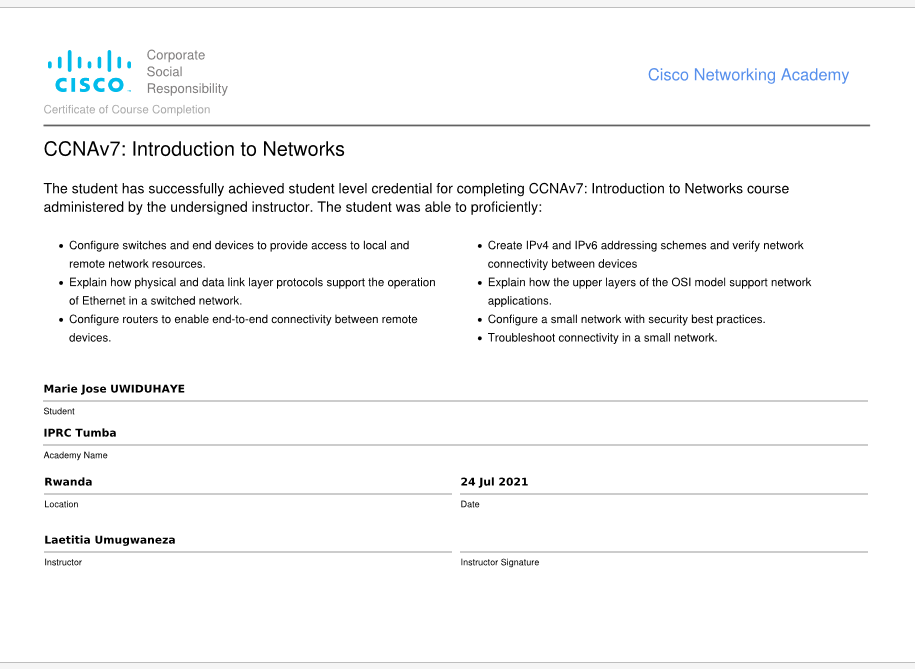
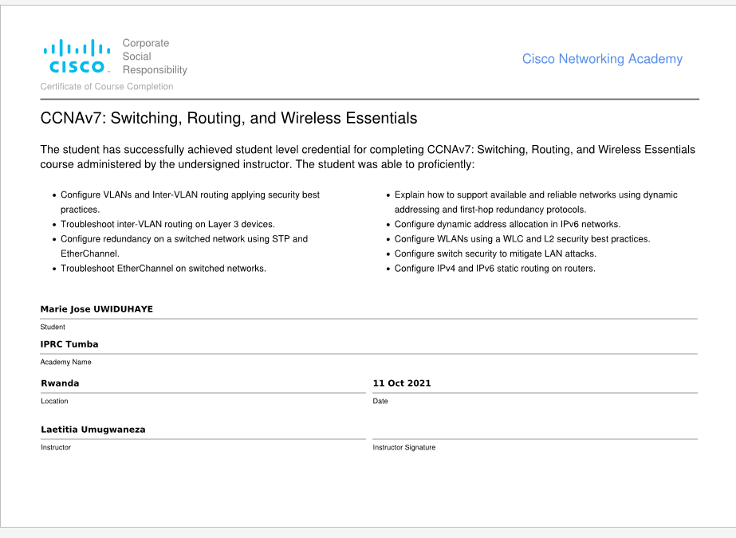
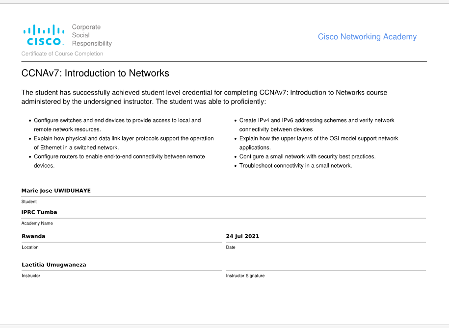
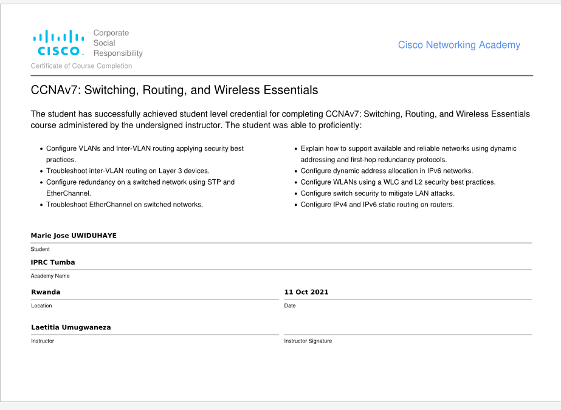

About Me

hey!
I’m marie jose UWIDUHAYE
I’M a frontend developer
from she can code,
i have Advanced diplome in information and communication technologhy from Iprc Tumba
I have done training in the She Can Code program and
I am familiar with using programming languages such as htm, css and java script
I have different certificates like SCAD training organized by kepler college
I have soft skills like time management, collaboration and problem solving
I am interested in software development
networking, and databases
I have 2 years experience in software development and I worked in Risa 2022
 


